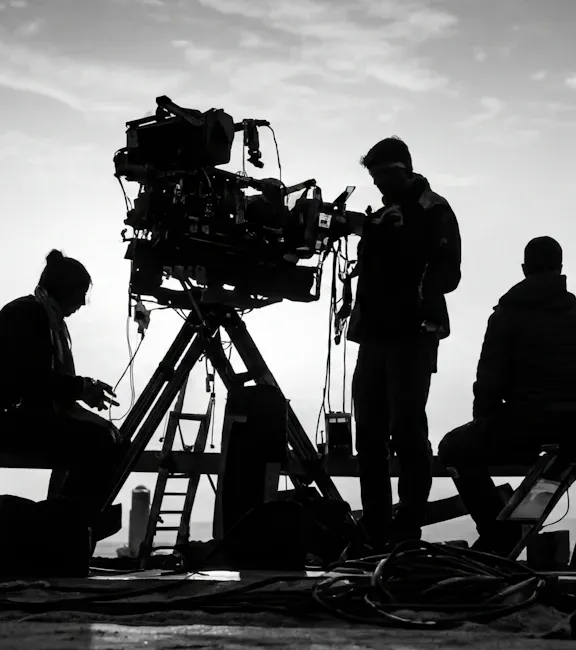
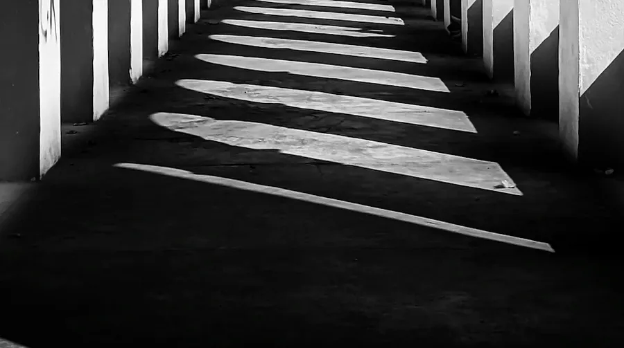
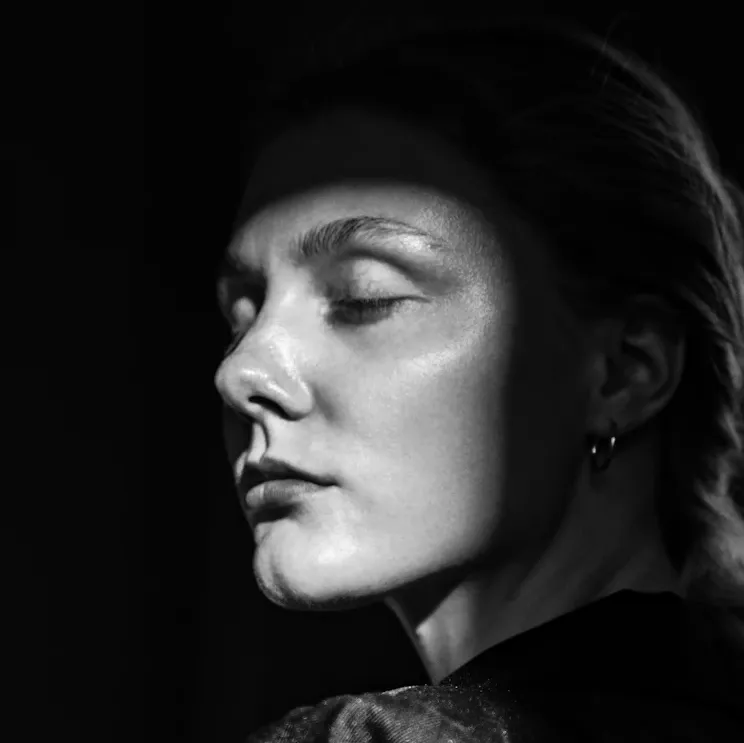
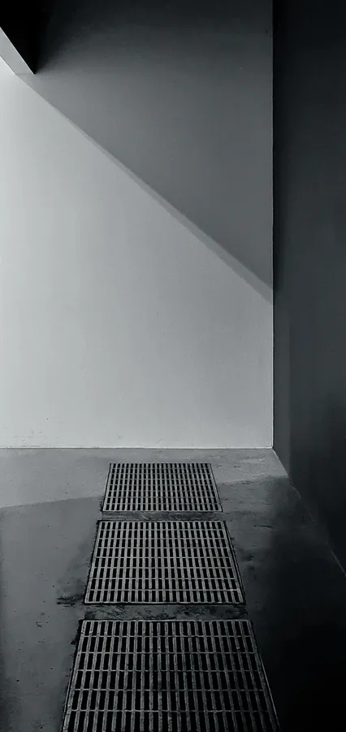

Studio

Forty steps
from the stage
to the grade.
It was a print shop until 2014: 1,100 square metres on two floors, a loading door on the courtyard and tall windows onto the canal. We counted once. It is forty steps from the stage to the grading room, and we have never wanted that to be fewer.
2016 10 yrs

2016 10 yrs

2019 7 yrs

2017 9 yrs

2018 8 yrs

2016 10 yrs

2018 8 yrs
2020 6 yrs

2021 5 yrs

Plan of a
former print shop
What is in
the cupboards
We own the things we reach for every week and rent the rest. The cameras are a decade or three old, the lenses older, and each one has a drawer with its own history of repairs.
- 01
16 mm camera, four-perf
1990s, reflex viewing, 400 ft magazines, crystal sync. Serviced every spring in Munich.
Camera×3 - 02
Super 16 camera
1980s body, gate widened to 12.5 × 7.4 mm. Shot Low Tide and most of the early music videos.
Camera×1 - 03
Large-format digital
Open-gate 4.5K sensor, two bodies. Wonderful in a studio, sulky below zero.
Camera×2 - 04
Handheld digital body
Small, loud, fast. Three nights of Nachtschicht were shot on it, hand-held, without a monitor.
Camera×2 - 05
Spherical prime set
1970s, 18 to 85 mm, T1.4 to T2. Warm, soft in the corners, and never replaced.
Lens×5 - 06
Anamorphic set, 2×
35, 50, 75 and 100 mm. Oval flares and a 2.39 frame. Arcade was made with these.
Lens×4 - 07
16 mm zoom
10 to 100 mm, T2.2. For documentaries and for things that do not wait.
Lens×1 - 08
Diopters & filters
A shoebox of diopters, four mist filters, one very good polariser and a graduated grey nobody lends.
Lens×31 - 09
B&W negative, 400 ASA
The default. Sixty-three 400 ft rolls went through the gate in 2025.
Stock63 rolls - 10
Colour negative, 250 tungsten
For skin, sodium light and a night in a car park. Twenty-eight rolls last year.
Stock28 rolls - 11
Colour negative, 50 daylight
The fine-grain one. Eleven rolls, all of them on the exteriors of Block 9.
Stock11 rolls - 12
Short ends
Leftovers from other people’s jobs, a drawer of them. The first three documentaries came from here.
Stock1 drawer - 13
Tungsten fresnels
From 650 W to 5 kW. Warm up in ninety seconds and make the room smell of a hot iron.
Light×11 - 14
Soft sources
Four 1.2 m LED panels, six paper lanterns and one 6 × 6 m silk. Never more than six lamps on a set.
Light×11 - 15
Flags, floppies, black cloth
Black cloth by the hundred metres. We cut light more often than we add it.
Light120 m - 16
Flatbed editing table, 1971
German-built, six plates, a smell of machine oil. Used for the rough cut of one documentary a year and for sentiment.
Post×1 - 17
Grading suite
Reference display, dim-surround, grey walls, a chair that does not swivel. Felix’s room, Felix’s rules.
Post42 m² - 18
Sound booth
120 mm of mineral wool on every wall. The room tone of forty-one locations is filed on a shelf by the door.
Post42 m²
Rules
of the
house
Written on the back of a call sheet by Hanne in the second year, after a very long Thursday. Nobody has ever voted to change them.
01 / 10- 01
Roll camera before anyone says they are ready.
Ready is a feeling. The camera does not care about feelings.
- 02
Keep the take where something went wrong.
The fifth take is performed. The first one, with the stumble, is lived.
- 03
Lunch is hot and seated.
Fourteen chairs, one long table, no plates on laps. Shoot day or not.
- 04
One lamp fewer than you think.
If six lamps solve it, you have found the problem. Take one away.
- 05
No references made of other people’s films.
Bring a photograph, a painting, a smell. A film shot twice is a bad film.
- 06
The person who lit it sits next to the person who grades it.
Forty steps apart is the limit.
- 07
Show the cut in the room, never by link.
The first cut is watched on one screen by everyone who has to live with it.
- 08
Test the stock. Name the can.
Every film gets a test roll, and the test roll gets a name in marker pen.
- 09
Say no quickly. Say yes carefully.
A slow no costs the client a month. A careless yes costs us a year.
- 10
Record the room tone before you leave.
Sixty seconds of silence per location. It is the cheapest thing we do and the one we need most.